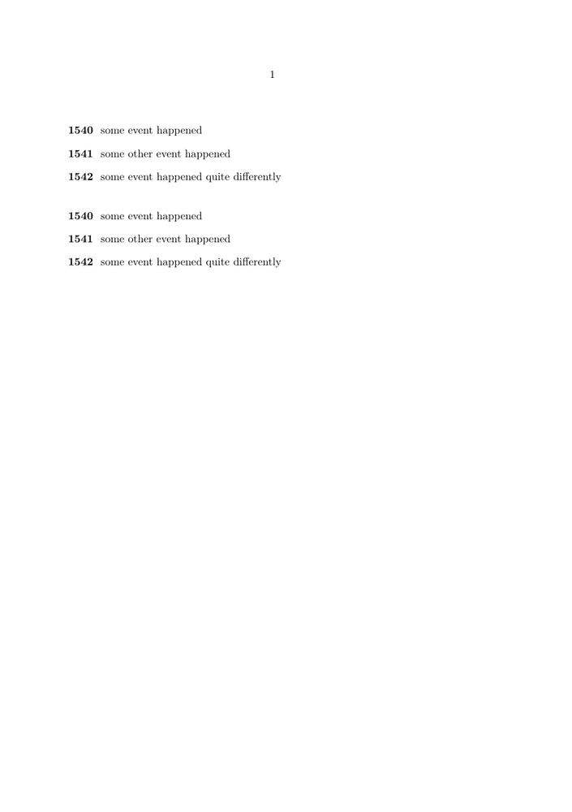

Contents
Summary
The environment \startspecialitem ... \stopspecialitem is an alternative for \startitem with different symbols.
Settings item
Settings none
| \startspecialitem[...] ... \stopspecialitem | |
| [...] | sub its |
Settings symbol
Description
Examples
Example 1
Wolfgang posted to the mailing list on 2024-05-05:
-
\starttext \startitemize[width=3em,symstyle=bold] \txt{1540} some event happened \txt{1541} some other event happened \txt{1542} some event happened quite differently \stopitemize \blank[2*line] \startitemize[width=3em,symstyle=bold] \startspecialitem[txt]{1540} some event happened \stopspecialitem \startspecialitem[txt]{1541} some other event happened \stopspecialitem \startspecialitem[txt]{1542} some event happened quite differently \stopspecialitem \stopitemize \stoptext
-
